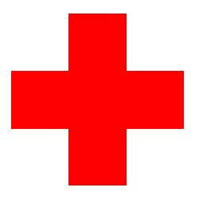

YOUTH RED CROSS
Anna university, Chennai-600025
About YRC
(For more details view the site in Desktop)
The famous quote said by Jean Henry Dunant "By Thy power, let there be peace, O God!" after witnessing the battle Solferino, lead to the formation of Red Cross Society. Every tree grows from a small seed likewise the Red Cross society grown like a tree in stages. Initially an International Committee of the Red Cross (ICRC) was formed to serve throughout the world to protect and assist victims of armed conflicts and strife.
The International Federation of Red Cross and Red Crescent Societies (IFRC) is an international humanitarian organization with a unique worldwide network. It is a federation of all National Societies recognized by ICRC. IFRC commands an immense potential because it can mobilize local volunteers through National Society world over. It's mission is to improve the situation of the world’s most vulnerable people and to assist National Societies in their work to promote co-operation between them.
- Humanity
- Impartiality
- Neutrality
- Independence
- Voluntary Service
- Unity
- Universality
The Indian Red Cross Society (IRCS) was established under the provision of section 8 of the IRCS Act XV of 1920 with its National Head Quarters in New Delhi. The core focus of IRCS is to promote Humanitarian Principles and Values, Disaster Management, Health and Care in Community and Blood Services.
IRCS, Tamil Nadu Branch was formed on 27th November 1920 with its State Headquarters in Egmore, Chennai. Some of the activities that are carried by Tamilnadu branch are:
- Principal
- Programme Officer
- Senior Teaching Faculty
- YRC Student Volunteer (Office Bearers)
University YRC Co-ordinator:
The Vice-Chancellor of the University nominates a dynamic, devoted, energetic, enthusiastic and service-minded faculty member of the University as the University YRC Co-ordinator.
The University YRC Co-ordinator takes up the responsibility for the growth and development of YRC in the University. The University YRC Co-ordinator will sensitize, induce, encourage, guide and train the young, active, selfless, sacrifice-filled and service-minded YRC Programme Officers nominated by the respective Principals of the colleges taking the help, assistance and co-operation of the YRC District Organisers / Joint District Organisers in each district in the University.
YRC District / Joint District Organiser:
The YRC District Organisers / Joint District Organisers are nominated by the University YRC Co-ordinator from among the YRC Programme Officers, who have excelled in their Red Cross activities with dedication, commitment, enthusiastic involvement, sacrificing nature and service-minded.
The University YRC Co-ordinator, District Organisers / Joint District Organisers and Programme Officers of YRC form the pillars of the Red Cross Movement in the University level firmly founded on the young, active, energetic and ready to serve YRC Volunteer groups in the colleges forming the very foundation of the Red Cross Movement in the grass root level.
ROLE OF DIFFERENT FUNCTIONARIES
University YRC Co-ordinator:
- Liaison between the State Co-ordinator and District Organisers / Joint District Organisers.
- Organizing training camps for District Organisers / Joint District Organisers / Programme Officers / YRC members.
- Guiding District Organisers / Joint District Organisers / Programme Officers for proper functioning of YRC.
- Issuance of certificates to District Organiser / Joint District Organisers / Programmer Officers / YRC Volunteers.
- Convening meeting of college Principals in connection with YRC activities.
- Organizing University Level camps / competition for YRC members.
- Submission of half yearly reports to State branch about the YRC activities in respective zones.
District Organisers / Joint District Organisers:
- Starting of YRC Units in all the Colleges (Arts & Science, Engineering) and Polytechnic in the respective districts.
- Helping / guiding Programme Officers in conducting YRC Programme in Colleges.
- Liaison between Colleges and University / University YRC Co-ordinator / State Co-ordinator / District Branch.
- Organizing training course for Programme Officers.
- Organizing yearly District level camps for YRC students.
- Organizing yearly District level seminars for Programme Officers.
- Recommending participants for State level programme to the concerned University YRC Co-ordinator.
- Organizing District level programmes like rally, competitions for creating awareness, sports, exhibition for YRC students.
- Celebration of Geneva Convention Day, World Red Cross Day, World Health Day, AIDS Awareness Day etc.
- Collection of Annual reports from the YRC Units of colleges and sending them to State branch with a copy to the University YRC Co-ordinator.
- Preparation of Annual action plan at District level.
College Principal:
The Principal of the college will function as a friend, philosopher, guide and facilitator, without whom YRC Units will not be able to function.
Programme Officer:
Formation of the Unit, monitoring its performance, helping the Office-bearers to chalk out programmes, maintenance of records / accounts, liaison with District / Joint District Organisers / University Co-ordinator, sending activity reports to State branch / University Co-ordinator.The YRC Programme Officer is expected to motivate the student youth to understand the values and philosophy of YRC. The overall functions of the YRC Programme Officer are to help the students to plan, implement and evaluate the activities of YRC under his/her charge and give proper guidance and directions to the student volunteers.
College YRC Unit:
YRC Unit will be attached to the Colleges. Both male and female students can join YRC. One YRC Unit could consist of 100 Student Volunteers (50 First Year Volunteers + 50 Senior Volunteers) guided by one YRC Programme Officer who will be a faculty member (Teaching Staff). Depending upon the strength of students willing to become YRC volunteers, any number of YRC Units can be started in the colleges. For effective functioning of the college YRC unit, it would be better if YRC unit has a separate room with adequate furniture. A name board for YRC unit with college name, Youth Red Cross, properly drawn (Red Cross emblem is formed from five equal red squares with one red square at the centre and the other four red squares on four sides of the centre square on a white back ground) and YRC Unit No. as shown may be prepared and put at the college main gate. YRC Unit No. will be given by YRC HQ (State branch) on submission of pro-forma and registration fee. A Red Cross flag, the photo of Jean Henry Dunant, Father of Red Cross Movement and Red Cross badges for the YRC volunteers should be obtained (from the YRC HQ). Red Cross apron, Red Cross Cap or arm band, will be useful for identification and protection of the YRC volunteers while they are in action. These may be prepared locally as per the design approved by the YRC HQ. In any YRC function in the college level the Red Cross flag will be hoisted in the presence of VIPs, by a VIP and the assembled YRC Volunteers will sing the YRC song. One of the items of the function will be the unveiling / garlanding the photo of Jean Henry Dunant.
YRC units in colleges need to be registered with the Indian Red Cross Society, Tamilnadu branch (IRCS, TNB) by paying Annual Institution registration fee of Rs.20/- per college as per the GOVERNMENT ORDER. A proforma in ANNEXURE is to be duly filled and submitted for registration purpose.
YRC Annual Membership Fee:
As per the G.O. No.342, Higher Education (J2) Department dated 30-11-2017 the Engineering Colleges will have to collect Rs.20/- per student from all the students every year along with the tuition fees. Out of this amount of Rs.20/- an amount of Rs.8/- is to be sent to
by drawing a Demand Draft in favour of the INDIAN RED CROSS SOCIETY, TAMILNADU BRANCH payable at CHENNAI. The balance amount of Rs.12/- will be retained by the respective Colleges for YRC activities. The enrolment form is given in the Annexure. In addition to the students subscription the colleges will have to be pay Rs.500/- per year as Annual Institution registration fee (Registration fee should not be collected from the students) as stated above.
Darthi karo nirmal karo beeda prabu hey
Jeevan karo vujval nava jyothi baro hey - (2)
Dukki janonki seva hum kare - (2)
Baththali thonko gale lagale - (2)
Shanthi badha shanthi kaarya shanthi varada hey!
Jeevan karo vujval nava jyothi baro hey!
Nava jyothi baro hey, nava jyothi baro hey!
YRC Programme Officer's Pledge:
As a Programme Officer of Youth Red Cross, I promise to serve, to work loyally for the promotion of health and the relief of suffering and distress, wherever I may find it and to hold in friendship youth of all Nations.
YRC Member Pledge:
I pledge myself to care my own health and that of others, to help the sick and suffering specially children and to look upon the youth all over the world as my friends.
It is advised that each college shall have a college level advisory committee consisting of
- Principal: Chairman
- YRC Programme Officer: Vice-Chairman
- One Staff member with interest in social work: Member
- YRC Student Chairman: Member
- YRC Student Secretary: Member
The over all function of the YRC Advisory Committee at the college level is to advise on the various activities of YRC unit based on the immediate and urgent needs of the students and the community. The Committee should meet regularly at least four times a year.
- Enrolment register of volunteers
- Cash register
- Stock register (Consumable & Non-Consumable)
- Attendance register for volunteers
- Register of project reports
- Register of progress report
- Minutes book
- Visitors book
- Blood Donors directory